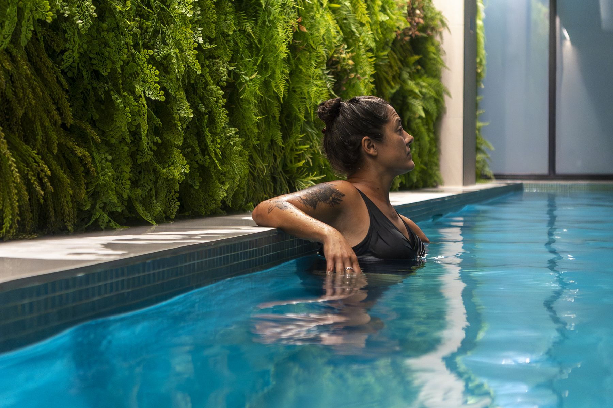
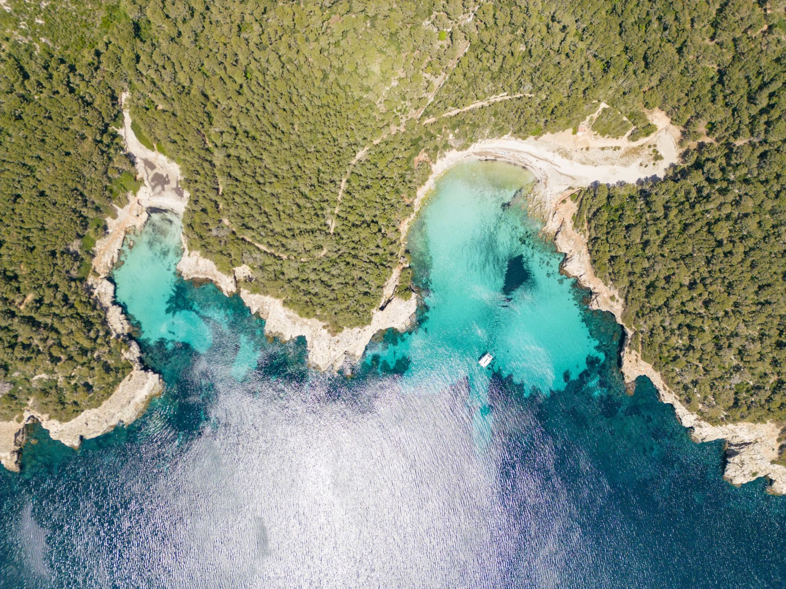
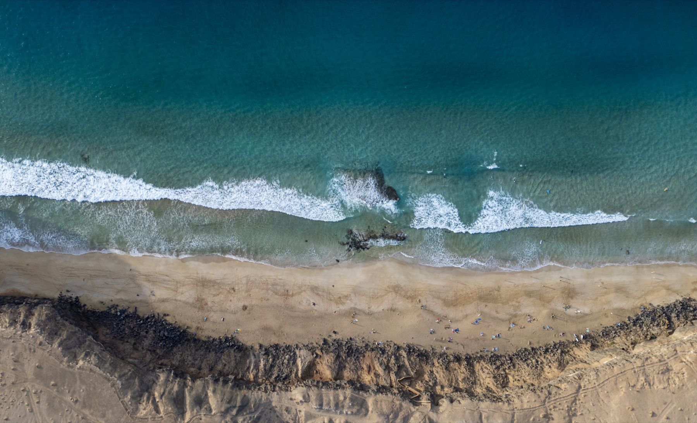
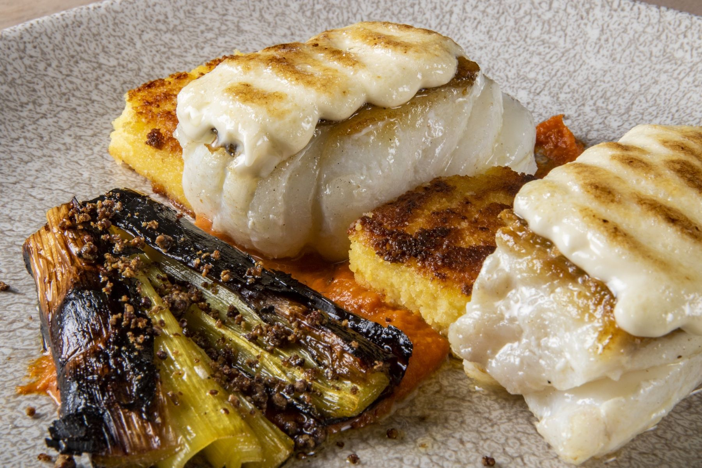
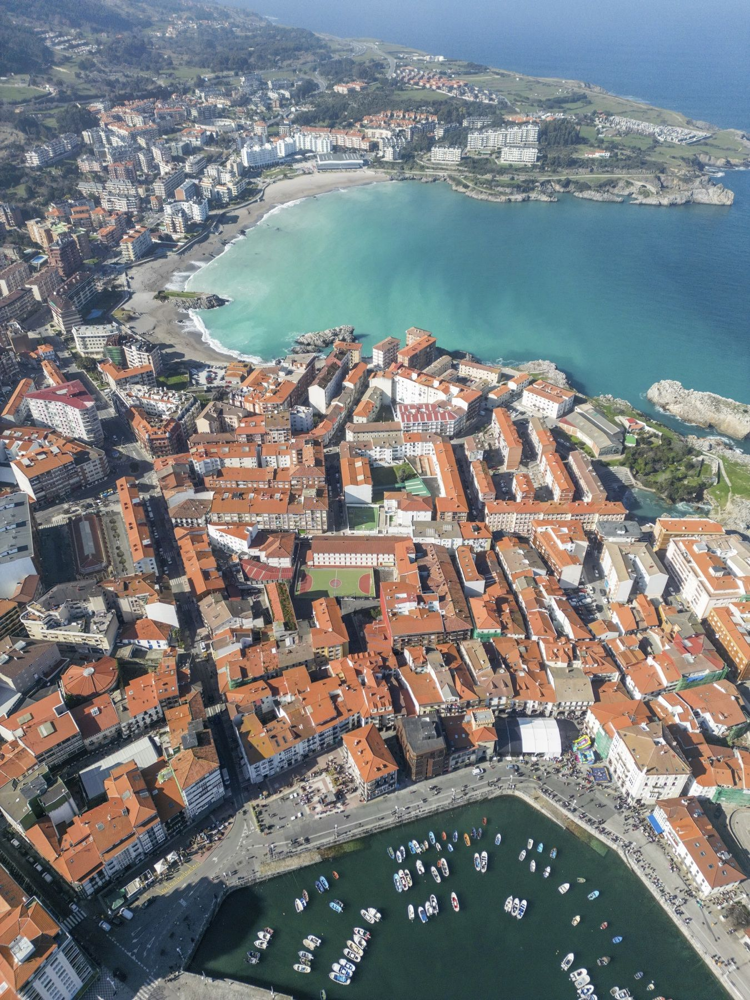

THE STAY
Spaces and moments
Accommodation, pools, service and the atmosphere guests can expect, captured on location.
AN INDEPENDENT PROPOSAL BY JUAN AIZPURU

Fresh imagery to connect your hotels with the places and experiences that make a holiday memorable.
Explore the proposalAt Azul Beach Resort Montenegro, the beach is the beginning. Food, activities and nearby Ulcinj give guests more reasons to explore.
I propose creating a tailored collection of photography and film around the experiences Karisma wants to promote, connecting the resort with the Adriatic landscape and local life.
The photographs shown are examples from my archive. They do not depict Karisma properties or claim to show Montenegro. The proposed production would be created on location with your team.

We can start with the hotel and experiences you want to highlight, then shape the production around your marketing calendar.

Accommodation, pools, service and the atmosphere guests can expect, captured on location.

Dining, local ingredients, the people behind the service and the pleasure of sharing a meal.

Coastal landscapes, Ulcinj and activities such as kitesurfing, produced with local partners where useful.
Use the photographs and video with your own team or agency, or work with us to develop a complete campaign. Together we can define the locations, duration, formats and usage rights around your needs.
I am Juan Aizpuru, a photographer and filmmaker working with a professional team. I retain authorship and ownership of the material, with usage licensed as agreed for each project.
Discover my workI would welcome the chance to meet at FITUR and learn which properties and campaigns are your priorities.
Let's meet at FITUR